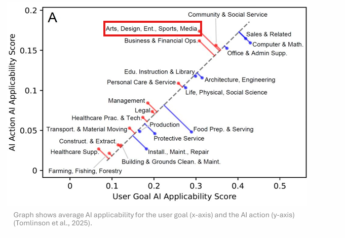

What AI Has (and Hasn't) Taken Over in Video Production
Microsoft Research just released their New Future of Work Report 2025, and one chart stuck out to me:

Look at where Design and Media lands on that chart. Upper quadrant, right up there with Computer and Math. It's one of the top fields for AI disruption. Now, the category bundles a lot together (arts, sports, entertainment), but I can give you a perspective on what I've actually seen and experienced in the media space: what's real, and what's not.
Some tasks have been completely revolutionized. Others are still waiting for tools that actually work. And what's hyped on social media rarely matches what's actually useful in a production workflow.
Let me break down what's actually working, what's overhyped, and what I'm still desperately waiting for someone to build.
What AI Has Actually Taken Over
Captions and Transcription
This is the clear winner. Remember when we used to pay per minute for transcription services? Or worse, do it manually? Now auto-generated captions are... actually good. Not perfect, but good enough that cleanup takes minutes instead of hours. For accessibility alone, this has been transformative.
Live Captions
Real-time captioning during live events used to require a professional stenographer. Now we can run live captions that are surprisingly accurate. The latency is still there, but for most use cases, it works.
Text-to-Speech
This might be the biggest shift of all. We no longer hire voice actors. Full stop.
The quality of AI-generated voices has gotten so good that for our use cases, tutorials, documentation, explainers, localization, there's no reason to book talent, schedule studio time, and manage all the logistics that come with it. We generate what we need, adjust the pacing, tweak the tone, and we're done.
Want proof that this space has fundamentally changed? ElevenLabs just hit a $6.6 billion valuation. A text-to-speech company valued higher than most media companies. That tells you everything about where the industry thinks the future is going.
Are there still use cases for human voice talent? Sure, distinctive character work, celebrity voices, content where the human connection is the point. But for the vast majority of production voiceover work? AI has won.
Publishing
AI has streamlined the entire publishing workflow by ingesting caption files and automatically generating titles, descriptions, and chapter markers. Chapter markers alone used to be a huge time suck, someone had to watch the video, note the timestamps, write the labels. Now? It's automatic. All our videos have chapters by default because AI made it trivial.
It's not always right. You still need a human in the loop reviewing what it spits out, weird titles, misplaced chapter breaks, descriptions that miss the point. But the time savings are massive. You're editing AI's first draft instead of starting from scratch.
Audio Cleanup
This one blew my mind. Adobe Podcast Enhance is insane. I'm not exaggerating, record your audio with a potato and run it through that tool. The output sounds like you used a Shure SM7B in a treated studio. Conference room echo, HVAC hum, laptop fans, it handles all of it and doesn't make you sound like an underwater robot.
One tip: don't crank the enhancement slider all the way up. Go too aggressive and you hit uncanny valley territory, voices start sounding weirdly processed and artificial. But if you're conservative with it, the results are amazing.
For anyone doing interviews, podcasts, or any talking head content in less than ideal conditions, this is a game changer.
Everything Else
AI has crept into so many other parts of the workflow that it's hard to list them all:
- Video summaries and searchable transcripts. Finding the moment in a 2-hour recording where someone said that one thing? Used to be painful. Now it's a search query.
- Copy for social. Need 10 variations of a post to promote a video? Done in seconds.
- Script writing. First drafts, outlines, rewrites for different audiences. AI won't replace your voice, but it's a great starting point.
None of these are revolutionary on their own, but combined? They add up to hours saved every week.
What We're Still Waiting For
Here's my wishlist. The stuff that would actually change my daily workflow if someone solved it:
Intelligent Rough Cuts
I want to feed an AI 4 camera angles and have it make reasonable edit decisions based on who's speaking, reaction shots, and visual interest. We're not there yet.
Consistent B-Roll Generation
More on this in another post, but generating footage that's actually usable and consistent? Still a mess.
Smart Asset Management
I want to say "find me all the screengrabs of the Azure Registry" and have it work. We're getting closer, but not there.
Automated QC
Check my export for audio sync issues, dropped frames, color space problems, and loudness compliance. All at once. Before I upload. Please.
The Bottom Line
AI hasn't replaced video producers. But it has eliminated a lot of the tedious work that used to eat up our days. The question isn't whether AI will change video production, it already has. The question is what comes next.
What's on your wishlist? What AI video tools have actually worked for you? I'm always looking to learn what's working for others in this space.